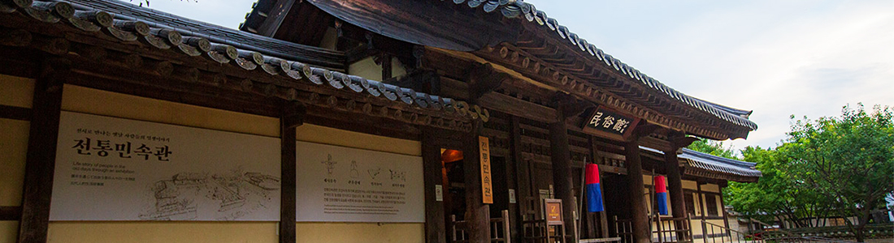
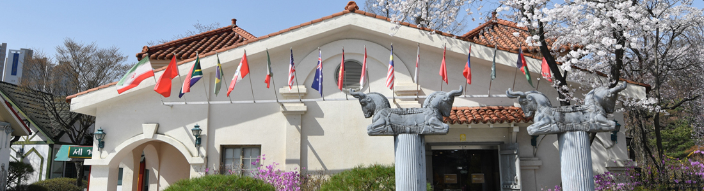
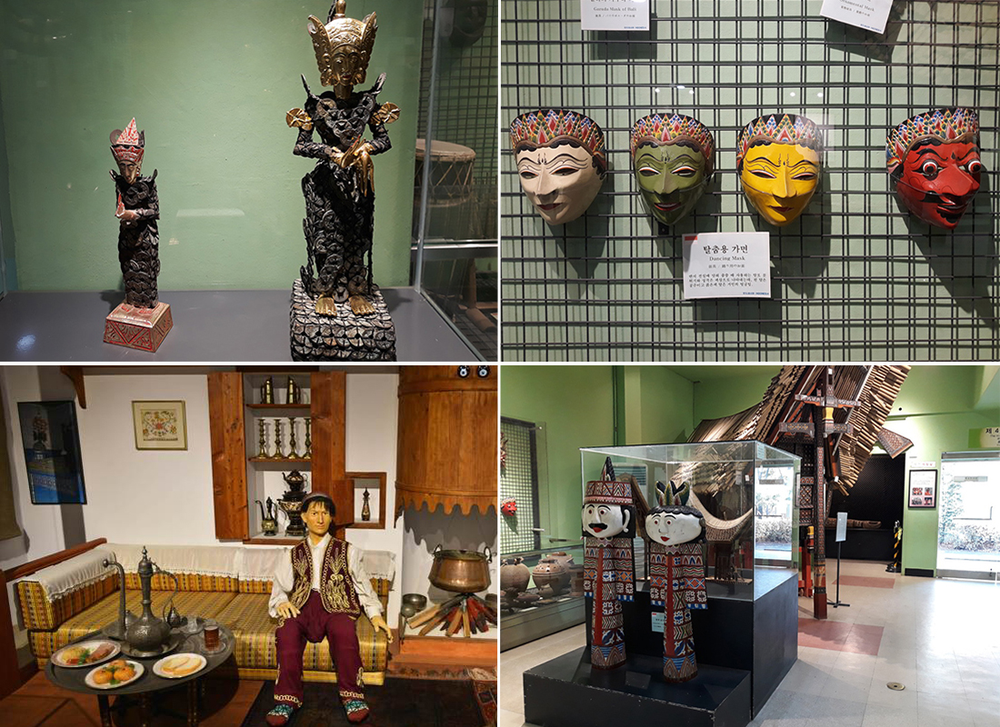

본문콘텐츠영역
전통민속관
세시풍속과 전통생활문화를 한눈에
전통민속관은 전통 민속박물관의 준말로 야외에서 재현하고 전시하기 어려웠던 세시풍속과 관혼상제, 의식주생활, 민속놀이 등을 디오라마 (축소모형), 움직이는 인형과 모형, 재미있는 만화와 옛 그림, 옛 사진, 유물전시를 통해서 보여주고 있습니다.
생업도구와 같은 유형의 물질자료, 농요와 같은 구비전승자료, 놀이와 같은 행위전승 자료를 적재적소에 배치하여 그 의미와 기능을 온전하게 해석하고 총체적으로 재현·전시한 점이 특징입니다.
전통민속관에서는 조선시대 후기 경기도 용인 땅에서 농사를 지으며 살았던 4대 가족의 연중생활을 사계절, 24절기 중심으로 태어나서 죽을 때까지의 일생의례를 생동감 있게 연출하여 전시하고 있습니다. 전통민속관은 우리의 전통문화를 보다 쉽게 배우고 체험할 수 있는 전시관으로 관람객들에게 사랑 받고 있습니다.
세계민속관
세계 각국의 생활문화를 전시한 세계민속관
세계민속관은 2001년 9월 22일 처음 개관해 9개동의 상설전시 공간으로 구성되어있습니다. 5대양 6대주에서 수집한 3,000여 점의 문화유산을 보유하고 있으며, 각 문화권마다 마련된 전시관을 통해 각 국의 의식주 생활과 생업기술, 문화예술을 쉽게 만나볼 수 있습니다.
